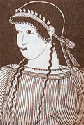

главная  персоналии
персоналии  Сапфо
Сапфо
главная |

Личность в историикраткая энциклопедияПроект «Личность в истории» посвящен людям — современникам грандиозных исторических событий, носителям редких качеств или людям, взгляды которых опередили их время. |
|||||
Коротко |
Статьи |
Персоналии |
Литература |
||
Сапфо |
|||||
|
…единственная из всех женщин любившая с лирой в руках… Гимелий |
 Сапфо. |
||||
Биографическая справкаСапфо (Сафо, правильнее Псапфа). Наиболее вероятное место рождения — г. Митилена на Лесбосе. Датой рождения следует считать вторую половину VII в. до н. э. Чрезвычайно талантливая поэтесса. Создала на родине музыкально-поэтическую школу, которой впоследствии долгие годы руководила. После того, как Сапфо вышла замуж (имя мужа, к сожалению, неизвестно), их дом стал центром поэтического творчества. Она окружила себя целой плеядой молодых, талантливых девушек, которых обучала поэтическому мастерству. Во время гражданских войн на Лесбосе уехала в Сицилию. Затем вернулась. Период активного поэтического творчества Сапфо чрезвычайно продолжителен. Он датируется 612–550 гг. до н. э. Точная дата смерти Сапфо неизвестна. Уже в древности ее имя было окружено легендами. Платон называл Сапфо «десятой музой». ??з творчестваКритянки, под гимн…Критянки, под гимн, (Перевод Вяч. ??ванова) Мать милая!…Мать милая! Станок Мне сердце страсть крушит; (Перевод Вяч. ??ванова) Мать моя говорила мне… (фрагмент)Мать моя говорила мне: [Доченька]: (Перевод С. Лурье) Список литературы
|
|||||
|